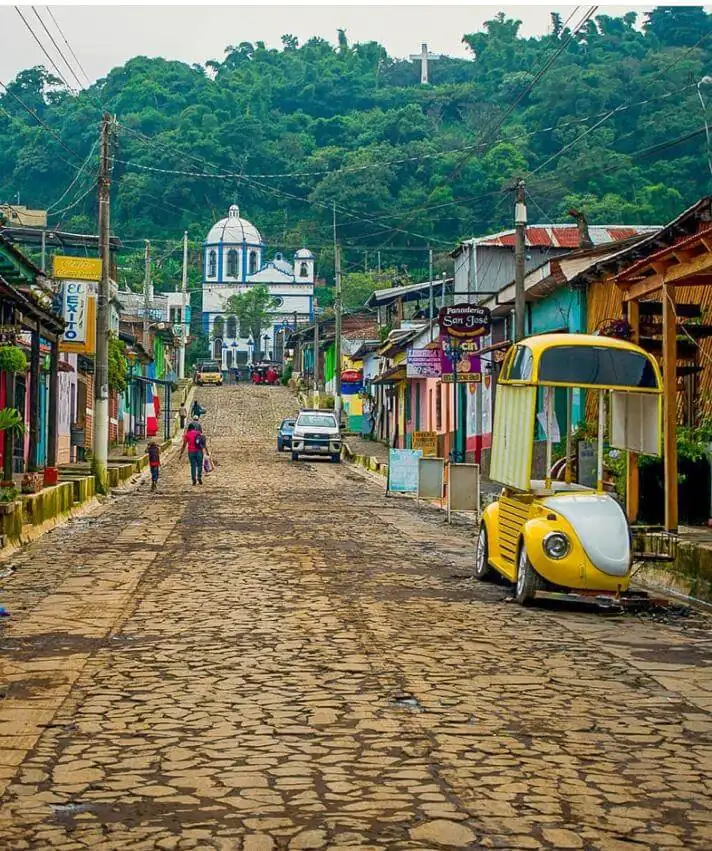

Ruta de las Flores desde El Tunco
Recorre los pueblos de Juayúa, Ataco y Apaneca: casas coloridas, murales, café de altura y mercados de artesanías. Salida desde Surf City o El Tunco.
Incluye
- Transporte privado ida y vuelta desde Surf City / El Tunco
- Paradas en Juayúa, Ataco y Apaneca
- Chofer local con conocimiento de la zona
- Horario flexible según tu ritmo